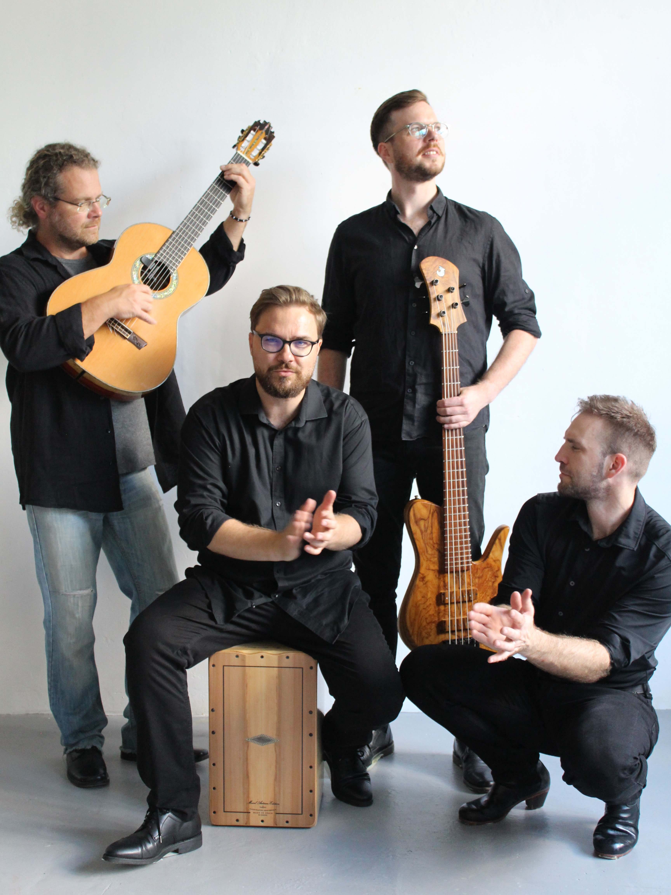

<!-- Příprava sekce Akce – zatím se nezobrazuje.
     Zapnutí: vložit do index.html za sekci #onas, přidat do menu odkaz #akce
     a do <head> řádek: <link rel="stylesheet" href="./styles/events.css">
     JS pro akce je ve flamencaFe.js (viz git historii). -->

<section id="akce">
  <h1>Akce</h1>
  <div class="events-list">

    <article class="event-block">
      <button class="event-preview" type="button" aria-expanded="false">
        
        <div class="event-preview-info">
          <h2 class="event-title">Café Zvon</h2>
          <p class="event-meta">Praha · 2025</p>
          <span class="event-toggle">Zobrazit fotky</span>
        </div>
      </button>
      <div class="event-gallery" hidden>
        
        <!-- ... 02.jpg až 10.jpg ... -->
      </div>
    </article>

    <!-- další akce: zkopírovat blok, fotky do img/akce/nazev-akce/ (01.jpg–10.jpg) -->

  </div>
</section>
